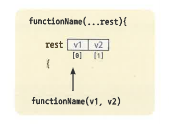
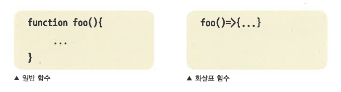

- 자바스크립트는 함수 인자와 인수의 수가 동일하지 않아도 오유가 발생하지 않는다. 인자는 선언된 매개변수에 순차적으로 할당되며 나머지는 할당되지 않는다. 또한 함수 호출 시 함수 내부에는 arguments 객체가 생성되며 배열과 유사한 형태로 전달 인자를 원소로 저장한다.
- 이런 함수 매커니즘은 동작에는 문제가 없으나, 가독성은 좋지 못하다. 가변 인자를 사용하는 경우, 매개 변수를 명확하게 설장하지 못하므로, arguments 객체를 사용해야 하는데 이것은 함수 내부 코드를 읽고 분석해야만 전달 인자의 파악이 가능하다.
다음 예는 함수 호출 시 전달 인자 중 두 번째 인자가 있을 경우 첫 번째 인자와의 합계를 반환하고, 없는 경우 첫 번째 인자만 반환하도록 작성하였다.
실행 : http://127.0.0.1:8887/ex05_01.html (책 예제 약간 수정)
function myFunction(p1){
if(arguments[1]){ // 두 번째 전달 인자가 있는 경우
return p1 + arguments[1];
}else{
return p1;
}
}
console.log(myFunction(100, 200));
- 위 코드의 함수 매개변수만 가지고는 전달 인자의 갯수를 알 수 없고, p1 매개변수를 제외하고 arguments 객체 index1에서 인자 값을 얻기 때문에 코드가 부자연스럽다. 나머지 매개변수를 이용하면 같은 상황에서 가독성을 높일 수 있는데, 가장 마지막 매개 변수에 '...'을 붙여 작성하고, 읽을 때는 '...'을 빼고 읽는다.
- 함수 호출 시 전달 인자가 앞의 매개변수에 순차적으로 전달되고, 나머지 인자가 모두 나머지 매개 변수에 할당된다. 이때 타입은 배열이 되고, 인자들으 순차적으로 배열의 원소가 된다.

- 다음은 나머지 매개변수를 활용하여 위의 코드와 동일하게 동작하는 함수를 작성해보았다.
실행 : http://127.0.0.1:8887/ex05_02.html (책 예제 약간 수정)
function myFunction(p1, ...args){ // ...args 나머지 매개변수 추가
if(arguments[0]){ // 나머지 매개변수가 있을 경우
return p1 + args[0];
}else{
return p1;
}
}
console.log(myFunction(100, 200));
- 위의 예와는 다르게 매개변수만으로 전달 인자의 예측이 가능해졌다. p1에 첫 번째 인자가 전달되고, ...args에 뒤에 나오는 인자가 배열로 저장됨을 단순히 등록된 매개변수만으로 예측이 가능해진다. 나머지 매개변수는 배열 index0부터 접근하기 때문에 코드가 보다 자연스럽다.
- 전달 인자가 없을 경우에 underfined 할당이 아닌, 원소가 없는 배열이 참조된다. 그렇기 때문에 전달 인자가 없는 경우 방어 코드를 작성해야하는 번거로움이 없다. 예를 들어 나머지 매개변수로 부터 length를 얻는 경우 값이 undefined라면 오유가 발생한다.
실행 : http://127.0.0.1:8887/ex05_03.html (책 예제 약간 수정, 실행 : X)
function myFunction(){
console.log(args.length); // underfined라면 타입 에러가 발생
}
myFunction();
- 하지만 나머지 매개변수는 전달 인자가 없더라도 빈 배열이기 때문에 length 속성은 0이 할당된다.
function myFunction(...args){
console.log(args.length); // 결과는 0;
}
myFunction();
- 기본 매개변수가 생기기 이전에는 매개변수에 기본값을 설정할 수 없어 전달 인자가 없을 경우 매개변수에는 undefined가 할당된다. 그렇기 때문에 undefined일 경우 초기 값을 다시 설정해야하는 번거로움이 있다.
- 다음 예를 살펴보면
function foo(p1){
// p1이 undefined일 경우 0을 할당
p1 = (typeof p1 != 'undefined') ? p1 : 0;
console.log(p1); // 결과는 0;
}
foo(); // 전달 인자없이 함수 호출
- 이런 번거로운 예외처리를 대신해 기본 매개변수가 추가되었다. 기본 매개변수는 선언 시 기본값을 할당할 수 있어 전달 인자가 없을 경우 기본값으로 설정되고 전달 인자가 있을 경우 전달 인자가 할당 된다. 다음 코드는 위와 같은 동작을 하는 함수를 기본 매개변수를 선언하여 작성하였다.
function foo(p1=0){
console.log(p1); // 전달 인자가 없으므로 결과는 0
}
foo(); // 전달 인자없이 함수 호출
- 기본 매개변수를 사용하니 코드 작성이 쉽고, 가독성 또한 매우 높아졌다.
- 기본 매개변수 선언 시 표현식에 먼저 선언된 매개 변수의 값을 이용하여 할당이 가능하다. 다음 코드 예는 먼저 선언된 매개변수와 기본 매개변수의 합을 나중의 기본 매개변수의 초기값으로 이용하고 있다.
function foo(a, b=100, c=a+b){
console.log(c); // 결과는 200, a(100) + b(100) = c(200)
}
foo(100);
- 처음 기본 매개변수에는 전달 인자를 할당하지 않고, 다음 매개변수에 값을 할당하고 싶다면 전달 인자로 undefined 할당을 하면 된다. 다음 코드의 예를 살펴보면
function foo(p1=100, p2){
console.log(p1, p2); // 결과는 100, 200
// 기본 매개변수 p1에는 undefined가 할당되었으나, 초기값 100이 할당된다.
}
foo(undefined, 200);
- 이번 장에서는 함수의 나머지 매개변수와 기본 매개변수에 대해서 살펴보았다. 다음은 함수의 나머지 매개변수와 기본 매개변수를 사용했을 때의 장점을 정리한 표이다.
| 나머지 매개변수 | 기본 매개변수 | |
|---|---|---|
| 장점 | 전달 인자의 수가 일정하지 않을 경우 arguments 객체를 사용하지 않아도 되며, 나머지 매개변수를 사용하여 배열 인수에 index 0부터 차례로 전달 받는다. | 기본 매개변수를 사용하지 않고, 전달 인자를 설정하지 않을 경우 초기값이 필요 하다면 별도로 예외처리를 해주어야 하는 번거로움이 있었는데, 기본 매개 변수를 사용하면 초기값 설정이 가능하고, 인수 선언 시 먼저 선언된 인수의 값을 활용할 수 있다. |
- 먼저 작성된 코드를 살펴보면 메시지를 반환해 주는 message 함수와 기본 매개변수를 설정해줄 sendmessage 함수 선언 후 호출하고 있다.
<!DOCTYPE html>
<html>
<head>
<title>나머지 매개변수(Rest Parameter)와 기본 매개변수(Default Parameter)</title>
<script type="text/javascript">
function message(){ // 메세지 문자를 반환하는 함수
return '공부합시다! ECMASCRIPT 2021';
}
function sendMessage(){ // 기본 매개변수를 선언하고 message 함수를 호출
// 내부에서 기본 매개변수의 값을 출력
}
sendMessage();
</script>
</head>
<body>
</body>
</html>
- sendmessage 함수에 기본 매개변수를 선언하고 초기값으로 message 함수를 호출하여 반환된 값을 설정해 본다. 다음과 같이 코드를 추가시켜 준다.
ecma6\complete\chapter5\5-1\ex01.html | http://127.0.0.1:8887\chapter5\5-1/ex01.html
<!DOCTYPE html>
<html>
<head>
<title>나머지 매개변수(Rest Parameter)와 기본 매개변수(Default Parameter)</title>
<script type="text/javascript">
function message(){
return '공부합시다! ECMASCRIPT 2021';
}
// 기본 매개변수를 설정하고 초기값으로 message 함수의 반환값을 설정
function sendMessage(msg=message()){
console.log(msg); // 결과는 '공부합시다! ECMASCRIPT 2021'
}
sendMessage();
</script>
</head>
<body>
</body>
</html>
- 화살표 함수(Arrow Function : 첵에는 오타)는 함수표기를 화살표(=>)로 하여 구문을 짧게 줄여 준다. 이는 코드 작성량을 줄여주어 작성 시간을 단축시키는데 도움이 된다. 하지만 일반 함수와는 달리 함수 블록 안에 this, argments, super, new, target 등의 키 값을 생성하지 않는다.
- 먼저 기존의 함수와 화살표 함수의 구문이 어떻게 다른지 살펴보년 아래 두 예를 비교해 보면 기존 함수 구문의 function 표기가 함수 구문에서는 () 뒤에 => 표기로 변경되어 구문이 좀 더 짧아졌음을 볼 수 있다.

var add = function(a, b){
return a + b;
}
let add = (a, b)=>{
return a + b;
}
- 함수 실행 구문은 표현식 한 줄인 경우 블록 구문을 생략하고 한 줄로 구문을 마무리 지어 코드 작성량을 줄일 수 있다. 다음 코드 예를 보면 블록 구문을 사용하였을 때 보다 생략하였을 때 코드가 좀 더 간결해 졌음을 알 수 있다.
let add = (a, b) => {
console.log(a + b);
}
let add = (a, b) => console.log(a + b);
- 화살표 함수에서 블록 구문 생략 시 return은 사용할 수 없고, 구문 오류가 발생하므로 주의해야 한다. 다음 코드 예는 블록 구문 사용 시 return 호출이 가능하지만, 생략시 구문 오류가 발생되는 것을 알 수 있다.
let add = (a, b) => {return a + b;}
let add = (a, b) => return a + b; // SyntaxError, return을 사용할 수 없음
- 화살표 함수는 단일 인자만 넘겨받는 경우 괄호를 생략해 줄 수 있어 코드 작성량을 줄여 줄 수 있다. 다음 코드 예는 단일 인자만 넘겨받는 함수의 괄호를 생략하였을 때 코드 작성량이 줄었음을 알 수 있다.
let print = (message) => document.write(message);
let print = message => document.write(message);
- 화살표 함수 매개변수에 기본값과 디스트럭쳐링 구문 사용의 예를 살펴보면
실행 : http://127.0.0.1:8887/ex05_09.html (책 예제 약간 수정)
let add = ({a=100, b=200}) => {
// 매개변수 a의 값이 전달인자값으로 변경되어 a=200, b=200이 됨
console.log(a, b);
return a + b;
}
console.log(add({a:200})); // 결과는 400
- 다음 코드는 화살표 함수가 메서드로 사용되는 예이다.
const calulation = {
add:(a, b) => { // 화살표 함수를 메서드로 사용
return a + b;
}
}
let sum = calulation.add(100, 200);
console.log(sum); // 결과는 300
- 화살표 함수는 일반 함수와는 달리 생성자 호출 또는 메서드 호출 시 환경함수에 의한 this를 생성하지 않는다. 다음 코드는 화살표 함수와 일반 함수의 메서드 호출 시 this의 참조값을 비교하고 있다.
var obj = {
foo:function(){
console.log(this); // this의 참조값은 obj
}
}
obj.foo();
var obj = {
foo:()=>{
console.log(this); // this의 초기값인 window 객체
}
}
obj.foo();
- 화살표 함수는 일반 함수와는 달리 호출 시 환경함수에 의한 arguments를 생성하지 않는다. 다음 코드는 화살표 함수와 일반 함수 호출 시 arguments의 참조값을 비교하고 있다.
var foo = function(a, b){
// [100, 200], 인자값을 리스트로 하는 arguments 생성
console.log(arguments);
}
foo(100, 200);
var foo = (a, b)=>{
// undefined, 선택되지 않았음
console.log(arguments);
}
foo(100, 200);
- 화살표 함수는 일반 함수처럼 앞에 new 연산자를 붙여 호출 시 생성자 호출이 되지 않는다. 다음 코드는 화살표 함수에 new 연산자를 붙여 호출하는 예이다.
let foo = ()=>{};
// foo is not a constructor, foo는 생성자가 아니므로 에러 발생
let f = new foo();
- 일반 함수와는 달리 화살표 함수는 prototype 속성이 존재하지 않으므로, prototype chain을 사용할 수 없다. 다음 코드는 화살표 함수에 prototype 속성을 조회하는 예이다.
let foo = ()=>{};
let p = foo.prototype;
console.log(p); // undefined, 선언되지 않음
- 이번 장에서는 화살표 함수에 대해서 살펴보았다. 다음은 일반 함수와 화살표 함수의 차이점을 정리한 표이다.
| 일반 함수 | 화살표 함수 | |
|---|---|---|
| 표기 | function(){} function 키워드와 괄호, 블록 구문을 생략할 수 없다. |
()=>{} |
| this 생성 | 함수가 객체의 속성에 참조되거나, new 연산자 호출 시 this의 참조값은 객체가 된다. | this를 생성하지 않는다. |
| arguments 생성 | 전달 인자를 리스트로 하는 arguments를 생성한다. | arguments를 생성하지 않는다. |
| new 연산자 호출 | new 연산자 호출 시 인스턴스를 생성한다. | new 연산자 호출이 불가능하다. |
| prototype 속성 | prototype 속성이 존재한다. | prototype 속성이 존재하지 않는다. |
- 다음 예제는 전달된 인자값을 document에 출력해 주도록 작성되어 있다. 코드를 살펴보면 상수 print에 참조된 익명 함수는 기존 함수로 작성되어 있다. 이를 화설표 함수로 수정해보자.
const print = function(message){ // 작성된 함수를 화살표 함수로 변환
document.write(message);
}
print('메시지 출력');
- 다음과 같이 코드를 수정한다. 함수를 화살표 함수로 수정해 주고, 인수가 하나이므로 괄호를 생략할 수 있다. 구문을 한 줄로 작성 시 대괄호 또한 생략이 가능하다.
ecma6\complete\chapter5\5-2\ex01.html | http://127.0.0.1:8887/chapter5/5-2/ex01.html
const print = message => document.write(message);
print('메시지 출력');